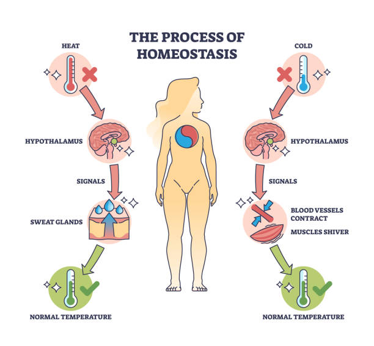

Homeostasis (from Greek homoios meaning "similar" and *stasis* meaning "standing still") is the ability of an organism to maintain a relatively stable internal environment (or milieu intérieur) despite changes in the external environment. This dynamic balance is fundamental to physiology, as virtually all diseases and bodily dysfunctions can be described as a failure of homeostatic regulation.

1. The Components of a Homeostatic Control System
Homeostatic regulation involves at least three interdependent components that monitor the internal environment:
A. Receptor (Sensor)
- Function: Monitors changes in the environment and responds to stimuli (change).
- Role: Sends information (input) along the afferent pathway to the control center.
- Example: Temperature receptors in the skin and brain.
B. Control Center
- Function: Determines the set point (the range at which a variable is maintained).
- Role: Analyzes the input and determines the appropriate course of action. It sends output along the efferent pathway.
- Example The hypothalamus acts as the body's thermostat, setting the core temperature at around 37°C (98.6°F).
C. Effector
- Function: Provides the means for the control center's response (output).
- Role: Acts to reduce or enhance the stimulus (bringing the variable back toward the set point).
- Example: Sweat glands (to lower temperature) or skeletal muscles (to shiver and raise temperature).
2. Mechanisms of Regulation (Feedback Loops)
Homeostatic controls are maintained by two main types of feedback mechanisms:
A. Negative Feedback Loop (The Primary Mechanism)
The output shuts off the original effect of the stimulus or reduces its intensity. The variable changes in a direction opposite to the initial change, returning it to the set point.
- Goal: Prevent sudden severe changes within the body. Maintain stability.
- Examples:
- Temperature Regulation: If body temperature rises, sweating and vasodilation occur to lower it.
- Blood Glucose Control: High glucose triggers insulin release (effector), which causes cells to absorb glucose, lowering the level.
- Blood Pressure Control: Baroreceptors detect high BP, triggering nervous responses to slow the heart rate and dilate vessels.
B. Positive Feedback Loop (Rare)
The output enhances or exaggerates the original stimulus, pushing the variable further away from the set point. They typically control events that require rapid completion.
- Goal: Accelerate a process to completion.
- Examples
- Labor Contractions: Uterine contractions cause oxytocin release, which causes stronger contractions, until birth is complete.
- Blood Clotting: Platelets aggregate and release chemicals that attract more platelets to the injury site, rapidly amplifying the clotting process.
3. Variables Controlled by Homeostasis
Key internal variables regulated by these feedback mechanisms include:
- Body Temperature: Must be maintained within a very narrow range.
- Blood pH: Regulated primarily by the Respiratory and Urinary Systems (range 7.35–7.45).
- Blood Glucose Levels: Regulated by the Endocrine System (insulin/glucagon).
- Blood Pressure and Volume: Regulated by the Cardiovascular and Renal Systems.
- Oxygen and Carbon Dioxide Levels: Regulated by the Respiratory System.
- Water and Mineral Balance: Regulated by the Renal System.
Clinical Significance
A disease is often seen as a disturbance of homeostasis (homeostatic imbalance). When the body's control systems are overwhelmed, the internal environment becomes unstable. Medical interventions (like administering medication or fluid replacement) are often aimed at assisting the body in restoring homeostasis.